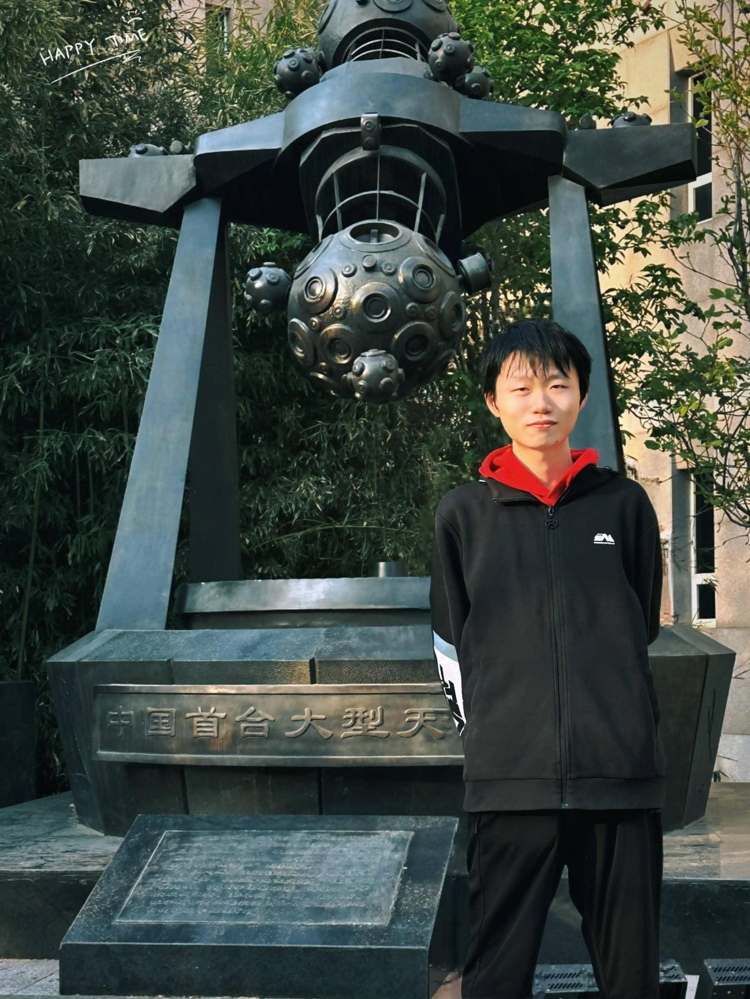

12月13日上午 | Session 01
09:00 - 10:00 TBD
李建 | 清华大学

演讲内容摘要
TBD
演讲嘉宾简介
TBD
10:00 - 10:40Transformer以及架构设计：从能量的视角观察
刘勇 | 中国人民大学

演讲内容摘要
Transformer 是当前大模型的核心架构，在自然语言处理、计算机视觉等领域展现出卓越性能，但其内在机理的理解仍较为有限。本报告从统计物理能量视角构建新框架，发现自注意力机制本质是最小化 Helmholtz 自由能的过程，由此为其提供了物理层面的原理解释。在此基础上，进一步从能量视角设计了新型 Transformer 架构，且实验验证了该架构的有效性。本研究为 Transformer 机理解读提供新视角，亦为其新架构设计提供新思路。
演讲嘉宾简介
刘勇，中国人民大学，长聘副教授，博士生导师，国家级高层次青年人才。长期从事机器学习基础理论研究，共发表论文100余篇，其中以第一作者/通讯作者发表顶级期刊和会议论文近60篇，涵盖机器学习领域顶级期刊Nature Communications、JMLR、IEEE TPAMI、Artificial Intelligence和顶级会议ICML、NeurIPS等。主持国家自然科学面上/基金青年、北京市交叉融通重点项目、科技部重点研发课题、北京市面上项目等项目。
10:40 - 11:00 Coffee Break
11:00 - 11:40 扩散模型采样过程及训练动态分析
李帅 | 上海交通大学
演讲内容摘要
近年来，扩散模型的采样速度与生成质量显著提升，在多个领域均表现出优异性能。然而，针对扩散模型的理论分析与设计空间仍有待深入探索。本报告从扩散模型的两大核心部分采样过程与训练动态入手，重点分析如何提升模型的采样与训练效率。在采样复杂度方面，本报告系统梳理了不同模型的特性，明确阐释了基于流的模型为何相较以往方法具有更优表现；在训练动态方面，本报告结合实际数据特征进行建模，以降低估计误差并改善优化景观。
演讲嘉宾简介
李帅是上海交通大学人工智能学院长聘副教授、约翰·霍普克罗夫特计算机科学中心副主任、上海创智学院全时导师，研究强化学习理论与方法、扩散模型与大模型分析，迄今发表论文90+篇，包含上海交通大学首篇机器学习理论顶会COLT等，其中第一/通讯作者发表CCF-A类论文40+篇。担任ICML、NeurIPS、ACL等会议领域主席与高级程序委员会委员，多次受邀于AAMAS和IJCAI给出关于在线学习的教程。主持国自然重大培育项目、面上基金、青年基金。曾获得AAAI-IAAI Deployed Application Award（2025）、上海市扬帆人才计划、上海徐汇光启人才、华为火花奖、香港政府外展合作奖、谷歌博士奖学金、国际SAT竞赛并行求解赛道铜牌、腾讯优秀导师奖等。
11:40 - 12:00极小极大优化问题的高阶加速
陈乐偲 | 清华大学

演讲内容摘要
极小极大优化问题（又称鞍点计算或Nash均衡点计算）是数值优化、博弈论等领域的基础问题之一。该问题的最优一阶复杂度早已被研究透彻：1976年Korpelevich提出了外梯度算法并证明其具有 O(1/T) 的收敛率，20004年Nemirovski进一步推广了外梯度法并且证明匹配的下界。然而，高阶算法（牛顿法以及张量法）求解该问题的复杂度仍然是未知的。
此前，最好已知的二阶算法是由Monteiro和Svaiter在2012年提出的牛顿外梯度法，具有 O(1/T^{3/2}) 的收敛率。近五年内，大量工作使用不同的算法得到了相同的结果，并且将算法推广到p阶张量形式，具有 O(1/T^{(p-1)/2}) 收敛率。 很多研究者认为这已经是该问题的最优复杂度，并且给出了看似匹配的下界。
在本次报告，我会讨论已知的下界为什么可以被打破。并且介绍我们近期的工作，提出一个p阶算法打破普遍推测的下界，首次达到O(1/T^{(3p+1)/4}) 的收敛率。我们结果取p=2，可以得到一个快速牛顿法，具有O(1/T^{7/4})的收敛率，该结果已经发表于COLT'25，并且获得最佳学生论文奖。
演讲嘉宾简介
陈乐偲是清华大学交叉信息研究院在读三年级博士生，研究方向为优化理论以及在机器学习中的实际应用，导师为张景昭助理教授。本科就读于复旦大学。多篇文章发表在机器学习国际期刊JMLR以及会议COLT、ICLR、ICML、NeurIPS、AISTATS上。
12月13日下午 | Session 02
14:00 - 15:00 TBD
孙若愚 | 香港中文大学（深圳）

演讲内容摘要
TBD
演讲嘉宾简介
TBD
15:00 - 15:40基于拓扑斯理论的大规模软件辅助生成框架
袁洋 | 清华大学

演讲内容摘要
随着大语言模型编程能力的持续提升，面向编程辅助的智能体系统迅速发展，并在实际开发中展现出显著成效。Cursor、Claude Code、Base44 等代表性工具已吸引大量开发者用户。然而，当前系统仍面临两大关键挑战：其一，难以高效生成具备完整架构与高一致性的超大规模软件系统；其二，交互模式多依赖“黑盒式”对话，用户在生成过程的细节控制上缺乏透明性与干预能力，代码的调整与优化往往依赖模型的迭代重生成，而非结构化引导。本报告尝试从范畴论与拓扑斯理论的角度出发，探索如何将这些数学基础应用于辅助编程系统的架构与交互设计，以突破现有瓶颈。我们提出的框架在类型编译器的帮助下，能够支持一次性并行生成数万行、并以较高概率一次编译通过的软件系统。更重要的是，该框架为用户（包括非专业编程背景者）提供了可解释、可干预的生成路径，实现前后端代码的协同构建与细粒度控制，从而在提升生成效率的同时增强系统的透明性与可控性。
演讲嘉宾简介
清华大学交叉信息研究院、人工智能学院副教授。2012年毕业于北京大学计算机系，2018年获得美国康奈尔大学计算机博士学位，师从Robert Kleinberg教授。他于2018-2019年前往麻省理工学院大数据科学学院（MIFODS）做博士后。袁洋的主要研究方向是智能医疗、AI基础理论、应用范畴论，在NeurIPS，ICLR，ICML等计算机和人工智能领域顶级会议上发表论文三十余篇。曾获得福布斯中国2019年30 Under 30、2019年北京智源青年科学家等荣誉。
15:40 - 16:00 Coffee Break
16:00 - 16:40 TBD
邹荻凡 | 香港大学

演讲内容摘要
TBD
演讲嘉宾简介
TBD
16:40 - 17:00 Principled Reinforcement Learning and its Role in Large Language Models
钟涵 | 北京大学

演讲内容摘要
In this talk, I will present our theoretical and practical advances in reinforcement learning (RL) and Reinforcement Learning from Human Feedback (RLHF). We introduce the Generalized Eluder Coefficient (GEC), a novel complexity measure that characterizes the fundamental statistical complexity in general decision-making problems. Our research demonstrates that GEC effectively captures the essential learning difficulty in various RL settings and enables the development of sample-efficient algorithmic frameworks. We extend our analysis to RLHF by introducing a preference-based variant of GEC, which addresses the sample complexity challenges in learning from human feedback. This theoretical advancement provides insights into the fundamental limits of RLHF algorithms. Building on these findings, we propose iterative Direct Preference Optimization (DPO) and its optimistic variant, which have demonstrated practical success in real-world applications. Our works establish a unified theoretical framework encompassing both RL and RLHF, offering a comprehensive understanding of their fundamental principles. This unified perspective not only advances theoretical understanding but also provides practical insights for developing more efficient learning algorithms.
演讲嘉宾简介
Han Zhong is a Ph.D. student at Peking University. His research focuses on reinforcement learning and its connections to operations research, statistics, and optimization. He has published papers in leading journals and conferences, including Mathematics of Operations Research, Journal of the American Statistical Association, Journal of Machine Learning Research, ICML, NeurIPS, and ICLR.
12月14日上午 | Session 03
09:00 - 10:00 基于大规模合作博弈的数据要素估值方法
常象宇 | 西安交通大学
演讲内容摘要
模型即服务（MaaS）是模型决策时代重要的商业模式之一。MaaS分为三步：（1）模型消费者向模型供应商业提出需求；（2）模型供应商从相关的数据供应商中获取相关数据；（3）模型供应商使用数据供应商的数据构建人工智能模型，并用于数据消费者提供的商业场景中进行商业决策。在MaaS的场景下解决如何数据要素估值并公平的分配给数据供应商是重要的科学问题。基于合作博弈理论，把数据供应商作为合作博弈的玩家，把合作中获取的商业价值使用经典的Shapley值进行分配是公平合理的数据要素估值与分配的解决途径之一。但是，面对复杂的数据要素交易场景，基于经典的合作博弈进行数据要素估值与分配仍然无法应用于实际的数据要素交易市场。具体挑战为：（i）应用场景的不确定性；（ii）交易场景的高复杂性；（iii）计算成本的高耗费性。本研究将试图针对上述挑战寻找一定的解决途径。
演讲嘉宾简介
常象宇，现为西安交通大学管理学院，信息系统与智能商务系教授;研究方向为统计机器学习。现致力于研究人工智能模型与算法应用于数据驱动决策场景中的社会化问题:特别关注机器学习中的数据要素定价，公平性机器学习与隐私保护机器学习等方向。 担任中国商业统计协会人工智能分会副理事长;中国现场统计研究会机器学习分会秘书长;数据科学与统计公益社区“统计之都”主席。
10:00 - 10:40TBD
张辉帅 | 北京大学

演讲内容摘要
TBD
演讲嘉宾简介
TBD
10:40 - 11:00 Coffee Break
11:00 - 11:40 基于扩散大语言模型的推理加速
张林峰 | 上海交通大学
演讲内容摘要
自回归模型串行生成的特点限制了其推理速度。近期，扩散大语言模型（Diffusion LLM）通过多步去噪的方式展现出了并行生成的潜力，并在精度上展现了媲美乃至超越自回归模型的效果。本报告主要讨论扩散大语言模型的推理加速方法，包括其缓存策略、解码策略、投机解码策略、以及变长生成方法等。同时，介绍扩散语言模型的一些潜在应用场景。
演讲嘉宾简介
张林峰，上海交通大学人工智能学院助理教授，研究方向为高效人工智能，大模型预训练与后训练，曾获世界人工智能大会云帆奖明日之星、微软学者奖学，北京市优秀毕业生，清华大学优秀博士论文，担任ICLR、NeurIPS、ACL、EMNLP等会议的领域主席。他以（共同）第一作者、通讯作者发表在高水平会议期刊上发表论文40篇，被引用超3000次。他的研究成果和工作经历被人民日报、中国青年报相关新闻全网浏览超过一亿次。
11:40 - 12:00 TBD
陈焕然 | 清华大学

演讲内容摘要
TBD
演讲嘉宾简介
TBD